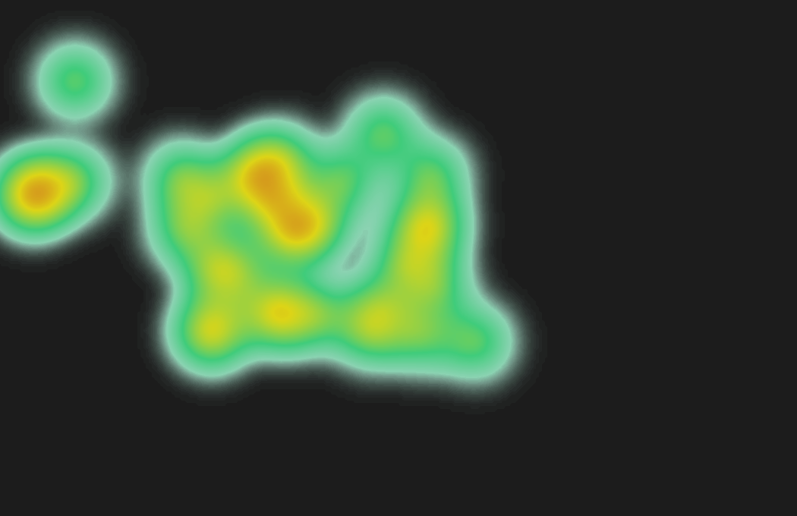

Lucas Paquetá (20)
brasil x escocia estatisticas: 66 min. corredor esquerdo, terço médio.
O Brasil tem o melhor jogador da amostra em Lucas Paquetá (20), mas o Japão tem ameaça real em Keito Nakamura (13). A partida pede agressão pelo lado forte brasileiro e proteção dura nas costas do meio.
Gerado em 28 de junho de 2026. Dados: 6 CSVs e 95 heatmaps extraídos de data/16avos. Partida referenciada no pedido: segunda-feira, 29 de junho de 2026.
Contra 3.95 do Japão.
Brasil vence mais contato físico. Use isso sem virar correria burra.
Vezes que o Brasil foi driblado; Japão sofreu 14.
Pressão seletiva, lado esquerdo agressivo, volante segurando zona 14.
O maior edge brasileiro é volume de duelos: 53.7% contra 48.0% do Japão (+5.7 p.p.). O ponto ruim é ter sido driblado 21 vezes contra 14 do Japão (+7). Traduzindo: fisicamente o Brasil impõe, mas se o bloco abrir, toma facada.
O plano ofensivo deve começar por Vinícius Júnior (7): 1.50 xGI/90, 9.31 toques na área/90 e índice ofensivo 92.4. A ideia é acelerar o primeiro passe vertical, atrair o lateral japonês e atacar o intervalo lateral-zagueiro.
O Japão mais perigoso aparece em Keito Nakamura (13), com 0.31 xGI/90 e mapa de calor agressivo. Casemiro não pode ser arrastado para longe da zona 14; o encaixe certo é volante protegendo e zagueiro antecipando, não perseguição burra.
O CSV não traz passes totais nem passes errados. Portanto, “passos/passes errados” aqui é medido por proxy: passes certos por toque, perdas por desarme, duelos perdidos e jogador driblado. Não é perfeito, mas é melhor do que inventar número.
Os heatmaps são imagens, não tracking bruto. O algoritmo mede pixels saturados/brilhantes para estimar centro de atividade, corredor dominante e terço dominante.
| Métrica | Brasil | Japão | Edge BR |
|---|---|---|---|
| Gols | 7 | 7 | +0.00 |
| xG | 7.40 | 3.95 | +3.45 |
| xA | 4.32 | 2.69 | +1.63 |
| Finalizações | 41 | 29 | +12.00 |
| No alvo | 19 | 11 | +8.00 |
| Chances criadas | 34 | 27 | +7.00 |
| Toques na área | 81 | 47 | +34.00 |
| Passes ao terço final | 175 | 170 | +5.00 |
| Desarmes sofridos | 15 | 15 | +0.00 |
| Ações defensivas | 157 | 159 | -2.00 |
| Driblado | 21 | 14 | +7.00 |
| % duelos vencidos | 53.7% | 48.0% | +0.06 |
Modelo: 4-3-3 assimétrico. A escalação abaixo maximiza índice FGT com confiabilidade por minutos, sem ignorar função. Danilo entra porque a amostra brasileira tem pouca alternativa natural de lateral direito; a compensação é tática, não fé.
| Titular | Função | Min | Rating | FGT | Mapa | Altura |
|---|---|---|---|---|---|---|
| Alisson Becker (1) | Goleiro | 270 | 7.72 | 64.4 | corredor central | terço baixo |
| Gabriel (3) | Defesa | 270 | 7.41 | 63.3 | corredor central | terço baixo |
| Marquinhos (4) | Defesa | 270 | 7.08 | 58.6 | corredor direito | terço baixo |
| Douglas Santos (16) | Defesa | 262 | 7.36 | 56.3 | corredor esquerdo | terço baixo |
| Danilo (13) | Defesa | 225 | 7.13 | 53.8 | corredor direito | terço médio |
| Lucas Paquetá (20) | Meio | 191 | 7.71 | 64.6 | corredor esquerdo | terço médio |
| Casemiro (5) | Meio | 200 | 7.23 | 58.2 | corredor central | terço médio |
| Bruno Guimarães (8) | Meio | 251 | 7.86 | 56.9 | corredor central | terço médio |
| Vinícius Júnior (7) | Ataque | 261 | 8.36 | 64.6 | corredor esquerdo | terço alto |
| Matheus Cunha (9) | Ataque | 169 | 8.28 | 64.1 | corredor central | terço médio |
| Rayan (26) | Ataque | 132 | 7.68 | 59.0 | corredor direito | terço alto |
Overload no lado de Vinícius. Atrair bloco japonês, acelerar com Bruno/Paquetá e atacar o intervalo entre lateral e zagueiro. Vini é o alfa: 1.50 xGI/90 e 9.31 toques na área/90.
Não abrir a zona 14. Kamada, Nakamura e Ueda vivem de receber entre linhas e finalizar rápido. Casemiro deve proteger, não caçar. Zagueiro antecipa, lateral fecha diagonal.
Rayan/Raphinha/Neymar/Endrick conforme cenário. Se o Japão baixar, entra 1v1 e chute. Se o Brasil estiver ganhando, entra fôlego para pressionar saída e proteger corredor.
| Jogador | Função | Min | Rating | FGT | Ataque | Criação | Defesa | Segurança | xGI/90 | Passe seguro* |
|---|---|---|---|---|---|---|---|---|---|---|
| Lucas Paquetá (20) | Meio | 191 | 7.71 | 64.6 | 63.9 | 86.5 | 74.9 | 40.3 | 0.52 | 66.0% |
| Vinícius Júnior (7) | Ataque | 261 | 8.36 | 64.6 | 92.4 | 62.6 | 28.1 | 23.4 | 1.50 | 46.9% |
| Alisson Becker (1) | Goleiro | 270 | 7.72 | 64.4 | 29.5 | 28.0 | 37.3 | 82.7 | 0 | 59.2% |
| Matheus Cunha (9) | Ataque | 169 | 8.28 | 64.1 | 85.8 | 44.4 | 64.2 | 56.3 | 0.67 | 55.1% |
| Gabriel (3) | Defesa | 270 | 7.41 | 63.3 | 38.3 | 37.9 | 63.4 | 89.9 | 0.04 | 85.1% |
| Rayan (26) | Ataque | 132 | 7.68 | 59.0 | 76.3 | 59.7 | 50.2 | 44.5 | 0.49 | 57.7% |
| Marquinhos (4) | Defesa | 270 | 7.08 | 58.6 | 37.6 | 39.4 | 54.8 | 88.1 | 0.04 | 87.0% |
| Casemiro (5) | Meio | 200 | 7.23 | 58.2 | 36.8 | 62.8 | 82.5 | 43.4 | 0.14 | 62.8% |
| Bruno Guimarães (8) | Meio | 251 | 7.86 | 56.9 | 53.6 | 73.8 | 59.8 | 39.2 | 0.28 | 59.0% |
| Douglas Santos (16) | Defesa | 262 | 7.36 | 56.3 | 39.9 | 41.2 | 58.5 | 73.6 | 0.07 | 67.6% |
| Danilo (13) | Defesa | 225 | 7.13 | 53.8 | 48.2 | 60.2 | 52.9 | 60.5 | 0.20 | 70.6% |
| Alex Sandro (6) | Defesa | 8 | 0 | 50 | 50 | 50 | 50 | 50 | 0 | 92.3% |
| Neymar (10) | Ataque | 14 | 6.17 | 50 | 50 | 50 | 50 | 50 | 0.51 | 50.0% |
| Danilo (18) | Meio | 19 | 6.12 | 50 | 50 | 50 | 50 | 50 | 0.47 | 50.0% |
| Jogador | Função | Min | Rating | FGT | Ataque | Criação | Defesa | Segurança | xGI/90 | Passe seguro* |
|---|---|---|---|---|---|---|---|---|---|---|
| Keito Nakamura (13) | Ataque | 244 | 7.84 | 65.0 | 75.8 | 65.2 | 47.3 | 66.9 | 0.31 | 58.3% |
| Ko Itakura (4) | Defesa | 129 | 7.73 | 60.4 | 35.5 | 65.6 | 58.9 | 85.8 | 0.03 | 85.5% |
| Daichi Kamada (15) | Meio | 253 | 7.75 | 59.0 | 69.5 | 75.1 | 45.5 | 42.8 | 0.41 | 67.5% |
| Takehiro Tomiyasu (22) | Defesa | 94 | 7.23 | 59.0 | 46.0 | 52.7 | 69.5 | 65.6 | 0.21 | 76.1% |
| Ao Tanaka (7) | Meio | 180 | 7.53 | 57.4 | 40.5 | 52.4 | 61.6 | 71.3 | 0.07 | 78.7% |
| Yukinari Sugawara (2) | Defesa | 121 | 7.02 | 54.6 | 59.4 | 54.5 | 66.1 | 57.2 | 0.16 | 47.5% |
| Junya Ito (14) | Ataque | 137 | 7.26 | 54.2 | 73.0 | 59.3 | 41.3 | 15.7 | 0.51 | 46.2% |
| Ayase Ueda (18) | Ataque | 234 | 7.38 | 53.4 | 75.6 | 49.1 | 29.1 | 15.2 | 0.42 | 35.0% |
| Zion Suzuki (1) | Goleiro | 270 | 7.15 | 53.3 | 27.6 | 31.5 | 41.0 | 70.7 | 0.00 | 44.9% |
| Hiroki Ito (21) | Defesa | 270 | 6.82 | 51.1 | 35.0 | 61.9 | 51.2 | 54.5 | 0.04 | 68.1% |
| Tsuyoshi Watanabe (16) | Defesa | 90 | 6.56 | 50.9 | 36.8 | 56.5 | 67.1 | 45 | 0.02 | 51.9% |
| Ayumu Seko (20) | Defesa | 86 | 6.56 | 50.6 | 28.4 | 48.8 | 55.7 | 61.1 | 0.01 | 65.6% |
| Junnosuke Suzuki (25) | Defesa | 17 | 6.23 | 50 | 50 | 50 | 50 | 50 | 0 | 50.0% |
| Keisuke Goto (9) | Ataque | 6 | 0 | 50 | 50 | 50 | 50 | 50 | 0 | 33.3% |
| Jogador | Função | FGT | Ataque | Criação | Defesa | xGI/90 |
|---|---|---|---|---|---|---|
| Neymar (10) | Ataque | 50 | 50 | 50 | 50 | 0.51 |
| Alex Sandro (6) | Defesa | 50 | 50 | 50 | 50 | 0 |
| Danilo (18) | Meio | 50 | 50 | 50 | 50 | 0.47 |
| Éderson (2) | Meio | 50 | 50 | 50 | 50 | 4 |
| Endrick (19) | Ataque | 50 | 50 | 50 | 50 | 0 |
| Luiz Henrique (21) | Ataque | 50 | 50 | 50 | 50 | 0.13 |
| Fabinho (17) | Meio | 49.2 | 29.9 | 34.8 | 67.3 | 0.01 |
Não é para queimar jogador; é para não fingir que risco não existe. Estes são os perfis brasileiros com menor segurança contextual na amostra.
| Jogador | Função | Rating | Segurança | Risco posse | Driblado/90 | Duelos perdidos/90 |
|---|---|---|---|---|---|---|
| Raphinha (11) | Ataque | 6.56 | 9.3 | 0.187 | 2.08 | 9 |
| Igor Thiago (25) | Ataque | 6.50 | 20.5 | 0.250 | 1.45 | 5.81 |
| Vinícius Júnior (7) | Ataque | 8.36 | 23.4 | 0.168 | 0 | 7.59 |
| Roger Ibañez (24) | Defesa | 6.66 | 29.3 | 0.161 | 4 | 10 |
| Gabriel Martinelli (22) | Ataque | 6.21 | 37.7 | 0.147 | 0 | 9 |
brasil x escocia estatisticas: 66 min. corredor esquerdo, terço médio.
brasil x escocia estatisticas: 90 min. corredor esquerdo, terço alto.
brasil x escocia estatisticas: 90 min. corredor central, terço baixo.
brasil x escocia estatisticas: 76 min. corredor central, terço médio.
brasil x escocia estatisticas: 90 min. corredor central, terço baixo.
brasil x escocia estatisticas: 82 min. corredor direito, terço alto.
japao x holanda estatisticas: 90 min. corredor esquerdo, terço alto.
japao x tunisia estatisticas: 90 min. corredor central, terço médio.
japao x holanda estatisticas: 90 min. corredor esquerdo, terço médio.
japao x tunisia estatisticas: 79 min. corredor direito, terço médio.
japao x suecia estatisticas: 90 min. corredor central, terço médio.
japao x suecia estatisticas: 90 min. corredor direito, terço baixo.
| Time | Adversário | Gols | xG | xA | Chutes | Chances | Ações def. |
|---|---|---|---|---|---|---|---|
| Brasil | Escocia | 3 | 4.34 | 2.55 | 21 | 18 | 54 |
| Brasil | Haiti | 3 | 1.80 | 1.13 | 8 | 6 | 46 |
| Brasil | Marrocos | 1 | 1.26 | 0.64 | 12 | 10 | 57 |
| Japão | Holanda | 2 | 0.59 | 0.58 | 10 | 10 | 48 |
| Japão | Suecia | 1 | 1.21 | 0.69 | 8 | 8 | 60 |
| Japão | Tunisia | 4 | 2.15 | 1.42 | 11 | 9 | 51 |
Saída 3+2Vini isolado no 1v1Paquetá atacando meia-esquerdaBruno virando corredorCasemiro fixo
Com bola, o Brasil deve formar uma saída 3+2: um lateral mais baixo, Gabriel/Marquinhos abrindo, Casemiro e Bruno dando linha. O alvo é tirar o Japão do centro e gerar 1v1 no corredor forte. Sem bola, bloco médio agressivo: gatilho de pressão quando o Japão tocar para lateral de costas ou volante pressionado.
Laterais simultaneamente altosCasemiro perseguindo pontaPasse vertical forçado por dentroCruzamento sem ocupação
O Japão pune bagunça mais do que domina território. O Brasil não pode transformar superioridade técnica em transição defensiva suicida. Perdeu a bola no lado forte? Cinco segundos de contra-pressão ou falta tática longe da área.

Ko Itakura (4)SueciaO FGT Index é um score 0-100 com percentis e shrinkage bayesiano simples por minutos: score_final = score_funcao * min/(min+90) + 50 * 90/(min+90). Isso evita endeusar jogador de 8 minutos e punir injustamente reserva sem amostra.
Componentes: ataque (xGI/90, xGOT/90, chutes no alvo, toques na área, dribles), criação (xA/90, chances, passes ao terço final, bolas longas), defesa (ações defensivas, tackles, interceptações, recuperações, duelos), segurança (perdas, duelos perdidos, driblado, passe certo/toque), progressão e goleiro.
Banco SQLite: build/footgametheory.sqlite. Tabelas: player_match_stats, player_aggregate, team_match_stats, team_aggregate, heatmap_features.